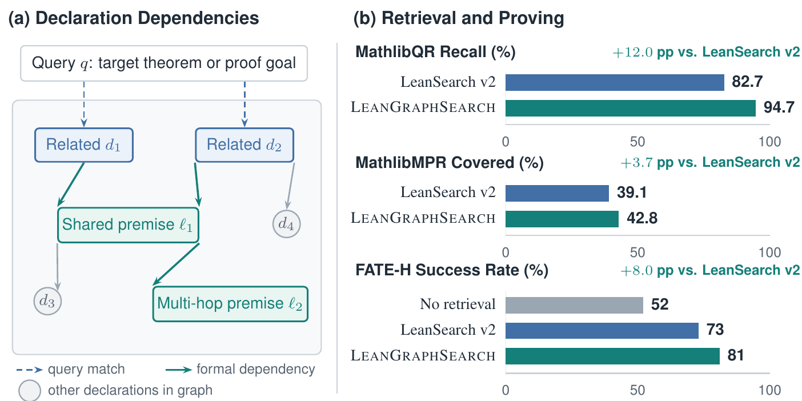
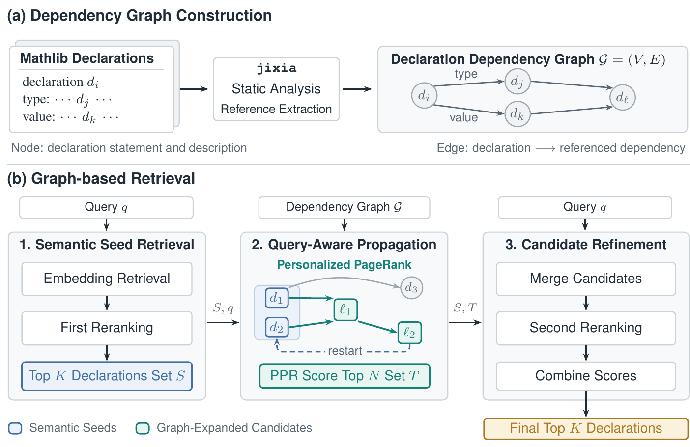
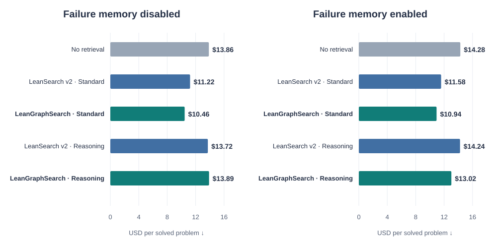

Selected results from Figure 1. MathlibQR: Recall@100; MathlibMPR: Covered@20; FATE-H: pass@32, reasoning mode with failure memory.
Beyond direct query matching
Useful premises are not always similar premises.
Formal theorem proving relies on finding the right definitions, theorems, and lemmas in a large library. A relevant declaration is often a useful starting point, but the supporting lemmas behind it may look very different from the original query.
LeanGraphSearch follows these structural connections. It builds a directed graph from Mathlib declarations to the premises they reference, starts from semantically relevant declarations, and uses personalized PageRank to uncover supporting lemmas along multi-hop dependency chains. A second reranking pass evaluates the expanded candidates against the original query.
We evaluate both premise retrieval and downstream theorem proving. The method improves declaration recall on MathlibQR and complete proof-route coverage on MathlibMPR. In an iterative Lean proving loop, graph retrieval also improves proof completion and reduces aggregate API cost per solved problem in the standard-mode configuration.
MathlibQR Recall@100
82.7% → 94.7%
MathlibMPR Covered@20
39.1% → 42.8%
From library structure to proof context
How LeanGraphSearch works
Static analysis with jixia extracts references from declaration types and values. Each edge points from a declaration to a dependency. At query time, retrieval proceeds in three stages:

- 01
Retrieve semantic seeds
Qwen3 embeddings retrieve candidates; a Qwen3 reranker selects declarations relevant to the query.
- 02
Follow formal dependencies
Personalized PageRank propagates relevance toward dependencies, while restarts keep the search anchored to the query.
- 03
Refine the candidates
Merge seed and graph candidates, rerank them against the query, and combine relevance with normalized graph scores.
Inside a Lean proving loop
The prover revises one proof candidate using Lean compiler feedback and retrieved premises. Optional problem-local failure memory records recurring formal states to help avoid repeated failed repairs. We compare standard and reasoning retrieval modes, with and without memory, under the same prover and reflection budgets.
Retrieval quality · Proof completion · API cost
Experimental results
Find declarations. Recover complete proof routes.
On the 810-query fair subset of MathlibQR, graph retrieval improves every reported metric. On MathlibMPR, complete-route coverage improves at every evaluated cutoff.
| Method | nDCG@1 | nDCG@5 | nDCG@10 | Recall@10 | Recall@50 | Recall@100 |
|---|---|---|---|---|---|---|
| LeanExplore | 0.246 | 0.358 | 0.393 | 0.569 | 0.743 | 0.789 |
| LeanFinder | 0.370 | 0.514 | 0.533 | 0.698 | 0.824 | 0.875 |
| LeanSearch v2 Standard | 0.472 | 0.596 | 0.616 | 0.765 | 0.821 | 0.827 |
| LeanGraphSearch Standard | 0.473 | 0.604 | 0.629 | 0.794 | 0.899 | 0.947 |
| Method | Covered@5 | Covered@10 | Covered@20 | Covered@30 | Covered@50 |
|---|---|---|---|---|---|
| LeanSearch v2 Reasoning | 22.5 | 29.7 | 39.1 | 41.3 | 41.3 |
| LeanGraphSearch Reasoning | 23.9 | 31.9 | 42.8 | 43.5 | 44.2 |
Covered@k requires every premise group in at least one annotated proof route to be retrieved. MathlibMPR rows are arithmetic means over Gemini 3.1 Pro and Claude Sonnet 5. LeanExplore and LeanFinder results are quoted in the paper from Gao et al. (2026).
Theorem proving results
All evaluation sets, reflection budgets, and retrieval configurations in one comparison. Gemini 3.1 Pro is the prover backbone; failure memory is evaluated both disabled and enabled.
LeanGraphSearch rows Bold best solved counts within each memory setting (ties included). Higher solved counts and lower costs are better.
| Retrieval condition | FATE-H | MathlibMPR-Prop | Lean-IMO Basic | Lean-IMO Advanced | ||||||||||||
|---|---|---|---|---|---|---|---|---|---|---|---|---|---|---|---|---|
| @8 | @16 | @32 | Cost ↓ | @8 | @16 | @32 | Cost ↓ | @8 | @16 | @32 | Cost ↓ | @8 | @16 | @32 | Cost ↓ | |
| Failure memory disabled | ||||||||||||||||
| No retrieval | 35 | 42 | 47 | 1.00× | 15 | 18 | 23 | 1.00× | 12 | 16 | 16 | 1.00× | 7 | 7 | 8 | 1.00× |
| LeanSearch v2Standard mode | 49 | 61 | 70 | 1.11× | 31 | 35 | 39 | 0.82× | 15 | 15 | 18 | 1.49× | 4 | 8 | 9 | 1.82× |
| LeanGraphSearchStandard mode | 53 | 69 | 71 | 1.09× | 32 | 38 | 41 | 0.78× | 16 | 17 | 21 | 1.40× | 5 | 9 | 10 | 1.88× |
| LeanSearch v2Reasoning mode | 52 | 68 | 73 | 1.41× | 33 | 37 | 41 | 1.01× | 14 | 16 | 21 | 2.04× | 7 | 9 | 10 | 2.56× |
| LeanGraphSearchReasoning mode | 56 | 70 | 75 | 1.37× | 33 | 38 | 39 | 1.06× | 14 | 16 | 19 | 2.09× | 7 | 8 | 10 | 2.53× |
| Failure memory enabled | ||||||||||||||||
| No retrieval | 33 | 45 | 52 | 1.00× | 15 | 19 | 23 | 1.00× | 13 | 15 | 17 | 1.00× | 5 | 6 | 7 | 1.00× |
| LeanSearch v2Standard mode | 53 | 63 | 71 | 1.01× | 33 | 35 | 39 | 0.76× | 13 | 16 | 16 | 1.61× | 6 | 7 | 8 | 1.64× |
| LeanGraphSearchStandard mode | 54 | 68 | 73 | 1.01× | 35 | 37 | 40 | 0.78× | 15 | 18 | 20 | 1.64× | 7 | 9 | 9 | 1.61× |
| LeanSearch v2Reasoning mode | 54 | 66 | 73 | 1.31× | 33 | 36 | 39 | 0.99× | 16 | 18 | 18 | 1.94× | 7 | 10 | 12 | 2.31× |
| LeanGraphSearchReasoning mode | 58 | 75 | 81 | 1.22× | 31 | 37 | 40 | 0.96× | 15 | 17 | 18 | 2.25× | 7 | 9 | 12 | 2.20× |
| Retrieval condition | @8 | @16 | @32 | Cost ↓ |
|---|---|---|---|---|
| Failure memory disabled | ||||
| FATE-H | ||||
| No retrieval | 35 | 42 | 47 | 1.00× |
| LeanSearch v2Standard mode | 49 | 61 | 70 | 1.11× |
| LeanGraphSearchStandard mode | 53 | 69 | 71 | 1.09× |
| LeanSearch v2Reasoning mode | 52 | 68 | 73 | 1.41× |
| LeanGraphSearchReasoning mode | 56 | 70 | 75 | 1.37× |
| MathlibMPR-Prop | ||||
| No retrieval | 15 | 18 | 23 | 1.00× |
| LeanSearch v2Standard mode | 31 | 35 | 39 | 0.82× |
| LeanGraphSearchStandard mode | 32 | 38 | 41 | 0.78× |
| LeanSearch v2Reasoning mode | 33 | 37 | 41 | 1.01× |
| LeanGraphSearchReasoning mode | 33 | 38 | 39 | 1.06× |
| Lean-IMO Basic | ||||
| No retrieval | 12 | 16 | 16 | 1.00× |
| LeanSearch v2Standard mode | 15 | 15 | 18 | 1.49× |
| LeanGraphSearchStandard mode | 16 | 17 | 21 | 1.40× |
| LeanSearch v2Reasoning mode | 14 | 16 | 21 | 2.04× |
| LeanGraphSearchReasoning mode | 14 | 16 | 19 | 2.09× |
| Lean-IMO Advanced | ||||
| No retrieval | 7 | 7 | 8 | 1.00× |
| LeanSearch v2Standard mode | 4 | 8 | 9 | 1.82× |
| LeanGraphSearchStandard mode | 5 | 9 | 10 | 1.88× |
| LeanSearch v2Reasoning mode | 7 | 9 | 10 | 2.56× |
| LeanGraphSearchReasoning mode | 7 | 8 | 10 | 2.53× |
| Failure memory enabled | ||||
| FATE-H | ||||
| No retrieval | 33 | 45 | 52 | 1.00× |
| LeanSearch v2Standard mode | 53 | 63 | 71 | 1.01× |
| LeanGraphSearchStandard mode | 54 | 68 | 73 | 1.01× |
| LeanSearch v2Reasoning mode | 54 | 66 | 73 | 1.31× |
| LeanGraphSearchReasoning mode | 58 | 75 | 81 | 1.22× |
| MathlibMPR-Prop | ||||
| No retrieval | 15 | 19 | 23 | 1.00× |
| LeanSearch v2Standard mode | 33 | 35 | 39 | 0.76× |
| LeanGraphSearchStandard mode | 35 | 37 | 40 | 0.78× |
| LeanSearch v2Reasoning mode | 33 | 36 | 39 | 0.99× |
| LeanGraphSearchReasoning mode | 31 | 37 | 40 | 0.96× |
| Lean-IMO Basic | ||||
| No retrieval | 13 | 15 | 17 | 1.00× |
| LeanSearch v2Standard mode | 13 | 16 | 16 | 1.61× |
| LeanGraphSearchStandard mode | 15 | 18 | 20 | 1.64× |
| LeanSearch v2Reasoning mode | 16 | 18 | 18 | 1.94× |
| LeanGraphSearchReasoning mode | 15 | 17 | 18 | 2.25× |
| Lean-IMO Advanced | ||||
| No retrieval | 5 | 6 | 7 | 1.00× |
| LeanSearch v2Standard mode | 6 | 7 | 8 | 1.64× |
| LeanGraphSearchStandard mode | 7 | 9 | 9 | 1.61× |
| LeanSearch v2Reasoning mode | 7 | 10 | 12 | 2.31× |
| LeanGraphSearchReasoning mode | 7 | 9 | 12 | 2.20× |
@8, @16, and @32 report the number of problems solved within 8, 16, and 32 reflection turns, following the paper's pass@k convention. Counts are not percentages. Cost is full-budget API expenditure relative to no retrieval in the same evaluation set and memory setting. Bold marks the best solved counts within each memory setting, including ties. Lower relative cost is better.
Less API expenditure per completed proof.
Across the theorem-proving benchmarks, standard-mode LeanGraphSearch has the lowest API cost per solved problem in both memory settings.


With memory enabled, reasoning-mode LeanGraphSearch costs $13.02 per solved problem. Standard mode offers the lowest cost per solved problem ($10.94) in that setting. These are distinct accuracy–cost operating points.
Explore and reproduce
The source package includes the retrieval pipeline, graph construction, proving loop, small benchmark inputs, and experiment presets. Model weights, corpora, indexes, and graph artifacts are prepared separately using the documented dependency setup.